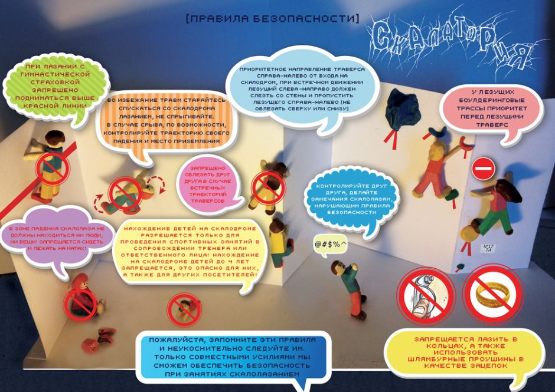
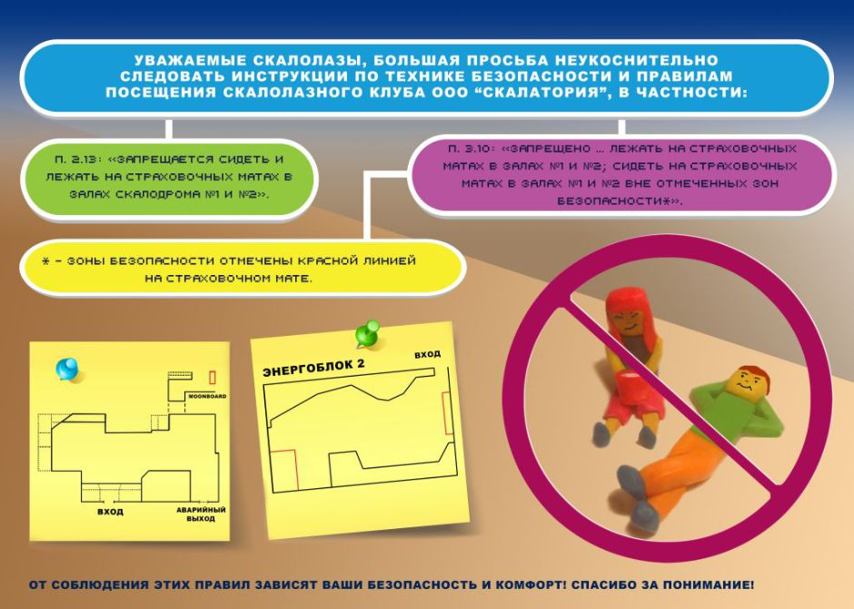

Правила
Уважаемые посетители cкалодрома «Скалатория»!
Скалодром — место, связанное с повышенной опасностью. Поэтому перед посещением скалодрома необходимо ознакомиться с Правилами посещения и Инструкцией по технике безопасности при нахождении на скалодроме.
Основной нашей задачей является обеспечение Вашей безопасности при посещении нашего скалодрома и создание комфортабельных условий для Ваших тренировок! Оборудование, используемое на скалодроме соответствует требованиям безопасности!
Помните, что если в процессе занятий на скалодроме у Вас возникнут какие-либо вопросы, касающиеся Ваших действий, то на скалодроме всегда находится инструктор, который всегда готов ответить на любой Ваш вопрос!
Перед каждым посещением скалодрома, пожалуйста, ознакомьтесь с этим плакатом и запомните основные правила поведения в Скалатории:


Инструкция по технике безопасности и правила посещения скалолазного клуба ООО «Скалатория»
Скалодром[1] — место, связанное с повышенной опасностью.
Настоящая инструкция ОБЯЗАТЕЛЬНА к неукоснительному выполнению ВСЕМИ лицами, находящимися на территории скалолазного клуба.
ООО «Скалатория» не несёт ответственности за возможные последствия, которые могут быть вызваны медицинскими противопоказаниями к занятиям скалолазанием у посетителей скалолазного клуба. Поэтому, если у Вас есть сомнения по поводу вашего здоровья, вы должны пройти медицинское освидетельствование и только затем приступить к скалолазным занятиям. Все посетители обязаны ДО начала занятий подтвердить, что не имеют никаких противопоказаний к занятиям скалолазанием. Факт приобретения услуг ООО «Скалатория» по пребыванию (посещению) на скалодроме является подтверждением отсутствия каких-либо противопоказаний к спортивным занятиям.
Приобретая услуги ООО «Скалатория» Вы подтверждаете:
- свое ознакомление и согласие с настоящей Инструкцией по технике безопасности при занятии на скалодроме ООО «Скалатория» и принимаете Правила посещения скалолазного клуба,
- отсутствие медицинских противопоказаний для занятий спортом;
- свое нахождение в здравом уме и рассудке, способность отвечать за свои действия и осознавать их последствия для себя и третьих лиц;
- отсутствие в будущем претензий к ООО «Скалатория» в случае получения ущерба здоровью в результате посещения скалолазного клуба.
1. Общие положения
-
ООО «Скалатория» оказывает услуги физическим и юридическим лицам по предоставлению в пользование помещения скалолазного клуба, оборудования для скалолазания, а в предусмотренных настоящими Правилами случаях услуги по проведению индивидуальных занятий с тренером.
-
Настоящие Правила определяют условия договора, заключаемого с посетителем скалолазного клуба «Скалатория» и являются стандартной формой, не подлежащей изменению по соглашению сторон. Договор об оказании услуг между посетителем и ООО «Скалатория» является договором присоединения и заключается путём присоединения посетителем к договору в целом.
-
Договор между посетителем и ООО «Скалатория» заключается путём приобретения посетителем входного билета.
-
Количество и состав предоставляемых услуг, как основных, так и дополнительных (аренда оборудования и (или) снаряжения, индивидуальные занятия с тренером) предоставляются в соответствии с прейскурантом, устанавливающим цены на основные и дополнительные услуги.
-
Посетитель клуба обязан по первому требованию представителя ООО «Скалатория» предъявить паспорт гражданина РФ или иной документ, содержащий сведения о возрасте посетителя.
-
Лица, не достигшие 18-летнего возраста, допускаются к занятиям на скалодроме при предъявлении копии Свидетельства о рождении, письменного согласия одного из родителей на посещение скалолазного клуба «Скалатория» и в сопровождении совершеннолетнего лица (лиц).
Нахождение детей на скалодроме разрешается ТОЛЬКО для проведения спортивных занятий в сопровождении тренера или ответственного лица! Нахождение на скалодроме детей до 4 лет ЗАПРЕЩАЕТСЯ, это опасно для них, а также для других посетителей!
-
ООО «Скалатория» гарантирует безопасность предоставляемых услуг лишь при условии неукоснительного и безусловного соблюдения посетителем Правил посещения клуба, Инструкции по технике безопасности, а также указаний и требований дежурного инструктора.
-
ООО «Скалатория» гарантирует безопасность предоставляемых услуг и несёт ответственность за качество предоставляемых услуг только при использовании оборудования и снаряжения, являющегося собственностью ООО «Скалатория».
2. Правила посещения скалолазного клуба
-
Перед началом занятий ознакомиться и неукоснительно соблюдать настоящие Правила посещения и Инструкцию по технике безопасности.
-
Перед началом занятий все посетители обязаны оплатить посещение скалолазного клуба, иные необходимые услуги (прокат снаряжения, услуги тренера или инструктора и т.д.), либо предъявить абонемент на право посещения скалолазного клуба на стойке администратора.
-
При каждом посещении скалолазного клуба посетитель обязан подтверждать знание техники безопасности и правил посещения скалолазного клуба своей собственноручно поставленной подписью в Журнале ознакомления на стойке администратора (при посещении скалолазного тренажера лицом, не достигшим 18-летнего возраста, подпись ставит также сопровождающее его лицо, имеющее на это право при предъявлении соответствующего документа).
-
Скалолазный клуб могут посещать лица, достигшие 18-летнего возраста, не имеющие медицинских противопоказаний для занятий спортом. Лица, не достигшие 18-летнего возраста могут посещать скалолазный клуб в сопровождении ответственного за него лица при предъявлении соответствующих документов, указанных в п. 1.6. настоящих Правил.
-
Не допускается посещение скалолазного клуба лицами, находящимися в состоянии алкогольного или наркотического опьянения, под воздействием иных сильнодействующих или лекарственных препаратов, употребление которых ограничивает или снижает внимание, зрение, реакцию, а также способность контролировать свои действия и осознавать их последствия для себя и окружающих.
-
Администрация клуба, а также дежурный инструктор имеют право отказать в посещении клуба или удалить из помещения клуба любое лицо, в отношении которого имеются любые основания предполагать, что указанное лицо находится в состоянии алкогольного или наркотического опьянения или под воздействием препаратов, указанных в п. 5. настоящих Правил.
-
При удалении из помещения клуба лица по основаниям, предусмотренным п. 1.6. настоящих Правил, денежные средства, уплаченные за билет, посетителю не возвращаются.
-
На территории скалолазного клуба ЗАПРЕЩЕНО распитие спиртных напитков, употребление наркотических и иных сильнодействующих веществ, курение.
-
Все посетители обязаны соблюдать чистоту и порядок, бережно относиться к оборудованию и имуществу скалолазного клуба, снаряжению. Запрещается оставлять мусор и посторонние предметы на территории скалолазного клуба, проходить на территорию скалодрома и зоны ОФП без сменной обуви или бахил.
-
На территории скалолазного клуба «Скалатория» принято уважать интересы окружающих, общаться вежливо, не допускать нецензурных выражений и поступков, которые могли бы каким-либо образом оскорбить посетителей и сотрудников скалолазного клуба.
-
Запрещается нахождение в скальных туфлях вне территории скалодрома.
-
Категорически запрещается оставлять посторонние предметы на поверхности страховочного мата.
-
Запрещается пользоваться болдеринговыми[2] трассами[3] с одетым мешочком для магнезии.
-
Запрещается лазать босиком.
-
Посетители обязаны придерживаться общепринятых норм гигиены.
-
Запрещается самостоятельно менять расположение зацепов[4] на скалодроме.
-
Забытые вещи хранятся в помещении скалолазного клуба в течение 30 (тридцати) дней и могут быть возвращены владельцу на стойке администратора при предъявлении доказательств о праве владения забытой вещью.
-
ООО «Скалатория» не несет ответственности за сохранность личного имущества посетителей скалолазного клуба.
-
Сотрудники скалолазного клуба «Скалатория» вправе отказать в посещении скалолазного клуба любому лицу без объяснения причин.
-
В случае несоблюдения посетителем Правил посещения скалолазного клуба и нарушения Инструкции по технике безопасности при нахождении на скалодроме сотрудники скалолазного клуба «Скалатория» вправе удалить его с территории скалолазного клуба без возмещения стоимости оплаченных услуг.
-
Все посетители, находящиеся на территории скалолазного клуба «Скалатория» обязаны неукоснительно подчиняться любым требованиям и указаниям дежурного инструктора, касающимся поведения на территории клуба, использования оборудования и снаряжения.
3. Инструкция по технике безопасности при нахождении на скалодроме
-
ООО «Скалатория» предоставляет скалодром для проведения тренировок и не несет ответственность за неправильные или ошибочные действия занимающихся на нем лиц.
-
К занятиям на скалодроме допускаются лица, прошедшие инструктаж по технике безопасности и подтвердившие это своей собственноручной подписью в Журнале ознакомления с техникой безопасности и правилами посещения скалолазного клуба ООО «Скалатория».
-
Лица, не достигшие 18-летнего возраста могут посещать скалодром в сопровождении ответственного за него совершеннолетнего лица при предъявлении соответствующих документов. При этом сопровождающее совершеннолетнее лицо несет ответственность за действия, жизнь и здоровье сопровождаемого несовершеннолетнего лица, о чем свидетельствует соответствующая подпись в журнале ознакомления с настоящими Правилами. В случае приобретения услуг инструктора (пробный подъем, вводное занятие, страхование инструктором и т.п.) инструктор несет ответственность только в рамках своих действий, а именно, за осуществление страховки надлежащим образом. Во всем остальном (состояние здоровья, адекватность поведения и действий, выполнение указаний инструктора и т.п.) ответственность лежит на сопровождающем лице. Лица, не достигшие 18-летнего возраста, допускаются к занятиям только после того, как сопровождающее совершеннолетнее лицо ознакомится с настоящими Правилами и техникой безопасности и поставит подпись с формулировкой:
Я, (ФИО) несу ответственность за действия, жизнь и здоровье (ФИО полностью).
в журнале ознакомления с настоящими Правилами и техникой безопасности.
Подпись посетителя в Журнале ознакомления с техникой безопасности и Правилами посещения является подтверждением принятия на себя всей полноты ответственности за любые свои действия, совершенные на территории скалолазного клуба «Скалатория».
Нахождение детей в залах скалодрома № 1, №2, а также в тренажерном зале разрешается ТОЛЬКО для проведения спортивных занятий в сопровождении тренера или ответственного лица! Нахождение в залах скалодрома № 1, №2, а также в тренажерном зале детей до 4 лет ЗАПРЕЩАЕТСЯ, это опасно для них, а также для других посетителей!
-
Категорически запрещено нахождение на скалодроме лиц, находящихся в состоянии алкогольного или наркотического опьянения, под воздействием иных сильнодействующих или лекарственных препаратов, употребление которых ограничивает способность контролировать свои действия.
-
Лазать на скалодроме возможно только при обеспечении страховки: гимнастической[6] (при лазании на болдеринговых плоскостях), верхней[7] (исключительно на плоскостях, предназначенных для этого и оборудованных соответствующими точками страховки[8]), нижней[9] (на плоскостях, оборудованных промежуточными точками страховки).
-
Проведение занятий на скалодроме разрешается только с использованием полностью исправного специального снаряжения (страховочных устройств гри-гри и конструкции «стакан» (ATC, Reverso и т.д.), обвязок[10], веревок, карабинов[11], оттяжек[12]), отвечающего необходимым требованиям безопасности (ГОСТ, UIAA, CE) и используемом в соответствии с рекомендациями фирм-производителей. Инструктор вправе не допустить использование на скалодроме непригодного для осуществления страховки снаряжения. В случае использования посетителями собственного страховочного оборудования, представляющего потенциальную опасность для владельцев и окружающих, ООО «Скалатория» не несёт ответственности за возможные последствия его использования.
-
Находиться на скалодроме разрешается только в присутствии на территории скалолазного клуба «Скалатория» дежурного инструктора и дежурного администратора.
-
В случае возникновения каких-либо вопросов, неуверенности, сомнений в правильности совершаемых действий посетитель обязан обратиться за разъяснением к дежурному инструктору и продолжить занятия на скалодроме исключительно после наступления полной ясности в вопросах, порядке своих действий, которые вызывали сомнения.
-
Посетители обязаны неукоснительно выполнять требования сотрудников скалолазного клуба «Скалатория», касающиеся вопросов пребывания на территории скалолазного клуба и занятий на скалодроме.
-
При нахождении на скалодроме запрещено:
- находиться на матах[13] под лазательными стенами, тем самым, мешая окружающим заниматься и создавая дополнительно угрозу причинения вреда своему здоровью и здоровью окружающих;
- сидеть на страховочных матах в залах № 1 и № 2 вне отмеченных зон безопасности;
- лежать на страховочных матах в залах № 1 и № 2;
- находиться друг под другом во время лазания;
- браться руками и наступать на страховочные проушины;
- залезать за конструкцию скалодрома;
- лазать с кольцами на пальцах и другими украшениями, которые могли бы зацепиться за элементы скалодрома, снаряжение, создать предпосылки к несчастному случаю, нанести травму посетителю и окружающим;
- лазать и осуществлять страховку с длинными распущенными волосами;
- лазать со снаряжением и иными вещами, которые при подъеме на стену могли бы упасть вниз;
- наступать на планки кампус-борда[14] ногами;
- каким-либо образом отвлекаться при осуществлении любого вида страховки;
Помните, что от Ваших действий зависит здоровье и жизнь человека, который доверил Вам себя страховать!
-
При лазании с гимнастической страховкой:
- запрещено подниматься выше красной линии, что соответствует высоте 4 метра по уровню рук от верхней поверхности страховочного мата;
- категорически запрещено спрыгивать с трасс на страховочный мат;
- спуск с трасс осуществляется только лазанием;
- при прохождении трасс всегда быть готовым к группированию в случае срыва;
- в случае непредвиденного схода с трассы (срыва) посетитель обязан голосом (криком) предупредить окружающих о срыве. При падении на страховочный мат, в целях избежания причинения себе травм необходимо группироваться (не выставлять прямые руки, не падать на локоть, осуществить амортизацию полусогнутыми напряжёнными ногами или кувырком). В случае, если Вы не уверены в своих навыках осуществления безопасного схода с трассы, обязательно обратитесь к сотруднику скалодрома за дополнительной консультацией;
- перед стартом на трассе предупредите окружающих о своём намерении лезть, убедитесь, что окружающие поняли, где Вы будете лезть, убедитесь, что Ваш старт и дальнейшее движение не создаёт препятствий и не угрожает (в том числе в случае непредвиденного схода с трассы) другим посетителям, как лазающим, так и находящимся внизу, попросите своего напарника или кого-нибудь из посетителей скалодрома подстраховать себя, убедившись в его (её) компетентности осуществить гимнастическую страховку;
- запрещено умышленно осуществлять опасное для своего и здоровья окружающих лиц спрыгивание со скалодрома на страховочный мат;
- не осуществлять лазание с гимнастической страховкой при одетой системе, особенно если сбоку пристёгнуто страховочное устройство или карабин.
- не придумывать и не осуществлять лазание скалолазных трасс, которые представляют опасность, как для самих занимающихся, так и для других посетителей;
- не располагать переносные маты таким образом, при котором они могут стать причиной травм, как личного характера, так и других занимающихся.
- осуществление «гимнастической» страховки и лазание с «гимнастической» страховкой должно осуществляться исключительно при владении соответствующими навыками, после прохождения обучения и отработки полученных знаний под присмотром компетентных лиц. Ответственность за получение, владение и правильное применение указанных навыков лежит на посетителе.
-
При лазании с верхней страховкой:
-
осуществление «верхней» страховки и лазание с «верхней» страховкой должно осуществляться исключительно при владении соответствующими навыками, после прохождения обучения и отработки полученных знаний под присмотром компетентных лиц.
Ответственность за получение, владение и правильное применение указанных навыков лежит на посетителе!
-
запрещается отклоняться от линии маршрута во избежание «маятника»;
-
запрещается использование на маршруте веревки, не предусмотренной для прохождения данного маршрута;
-
в качестве страховочного устройства допускается использование гри-гри и устройств конструкции «стакан» (ATC, Reverso и т.д.). Использование устройств иной конструкции недопустимо!
-
в качестве страховочного узла разрешается использовать только узел «восьмерка»[15];
-
пристегивание лезущего к веревке должно осуществляться следующим способом: сдвоенные карабины, завернутые муфты которых направлены в противоположные стороны, встегиваются в центральную петлю страховочной системы.
-
страховочное устройство страхующего должно быть встегнуто в центральную петлю страховочной системы одним карабином с завернутой муфтой.
-
недопустимо вщелкивание «карабин в карабин».
-
недопустимо вщелкивание карабина в контрольный узел на страховочной веревке.
-
скалолаз и страхующий его посетитель обязаны следить за правильным осуществлением страховки, не допускать провиса верёвки, цепляния верёвки за конструкцию скалодрома, зацепы или иные элементы конструкции,
-
страхующему запрещается протравливать[16] веревку через спусковое устройство[17] с большой скоростью;
-
страхующий обязан следить за тем, чтобы его партнер не был спущен на находящихся внизу людей;
-
запрещается лазать с верхней страховкой по сильно нависающим трассам и плоскостям, не предназначенным для этого.
-
-
При лазании с нижней страховкой:
-
осуществление «нижней» страховки и лазание с «нижней» страховкой должно осуществляться исключительно при владении соответствующими навыками, после прохождения обучения и отработки полученных знаний под присмотром компетентных лиц.
Ответственность за получение, владение и правильное применение указанных навыков лежит на посетителе!
-
ввязывание лезущего в веревку должно осуществляться с помощью узла «восьмерка» (фламандская петля) или «двойной булинь» в верхнюю и нижнюю петли страховочной системы,
-
страховочное устройство страхующего должно быть встегнуто в центральную петлю страховочной системы одним карабином с завернутой муфтой,
-
обязательно «прощелкивание» в первую оттяжку;
-
запрещено пропускать оттяжки;
-
до «прощелкивания» в первую оттяжку должна осуществляться гимнастическая страховка;
-
скалолаз обязан проследить за тем, чтобы используемое им снаряжение не падало вниз;
-
скалолаз и страхующий его посетитель (инструктор) обязаны следить за тем, чтобы верёвка проходила через оттяжки таким образом, чтобы при срыве с трассы не произошло самопроизвольное выщёлкивание верёвки из карабинов оттяжек;
-
скалолаз и страхующий его посетитель (инструктор) обязаны следить за правильным «выдаванием» верёвки, не допускать её чрезмерного провиса, цепляния за зацепы или элементы конструкции скалодрома. Выдавание верёвки должно быть достаточным и не допускающим в случае срыва скалолаза с трассы его удара о конструкцию скалодрома или других посетителей, падения на пол. Верёвка должна идти от лезущего человека к страхующему таким образом, чтобы при срыве лезущего исключить возможность цепляния верёвки частями тела и переворачивания сорвавшегося человека.
-
-
ООО «Скалатория» и ее сотрудники не несут ответственности за несчастные случаи, которые могут иметь место в результате страховки Вас третьими лицами. Лишний раз убедитесь в компетентности того, кому доверяете собственные жизнь и здоровье, либо обратитесь за помощью по данному вопросу к дежурному инструктору.
4. Правила посещения тренажерного зала
- вход в тренажерный зал разрешается только в чистой спортивной одежде и сменной спортивной обуви, запрещается заниматься на тренажерах босиком!
- в целях обеспечения безопасности посетителей к самостоятельным занятиям в тренажерном зале допускаются лица не моложе 18 лет. Несовершеннолетние дети до 18 лет допускаются к занятиям в строго под присмотром сопровождающего взрослого. Нахождение детей до 4 лет в тренажерном зале запрещено!
- во избежание травм следует подбирать нагрузки соответствующие Вашему уровню подготовленности. При наличии противопоказаний (травма, заболевания с ограничениями к нагрузкам, а также приём медикаментов) способных мешать выполнению упражнений в нормальном режиме и вызывающие нарушения координации, снижающие реакцию, способные вызывать потери сознания или другие клинические проявления (припадки, судороги) находиться в тренажерном зале и в помещениях скалодрома запрещено;
- перед использованием незнакомых тренажёров рекомендуется предварительно проконсультироваться у дежурного инструктора по правильности их использования;
- запрещено использовать неисправное оборудование и принимать самостоятельные меры к его ремонту. О случаях неисправности оборудования необходимо информировать дежурных инструкторов и администратора скалодрома;
- во избежание травм на тренировках рекомендуется не пренебрегать предварительной разминкой перед выполнением основной нагрузки. О её содержании, продолжительности и интенсивности рекомендуется проконсультироваться у инструктора или тренера;
- в работе с большими и/или свободными весами рекомендуется прибегать к помощи напарника по осуществлению страховки при выполнении упражнения;
- во избежание травм при выполнении любых упражнений в тренажерном зале не рекомендуется отвлекаться на звонки по мобильному телефону, оклики, разговоры и т.п. Предварительно закончите упражнение, установите свободный вес или тренажёр в исходное положение и только после этого переключайте своё внимание;
- во время пауз отдыха между подходами не сидите на тренажёре, для того чтобы другие занимающиеся также могли воспользоваться ими;
- требуется убирать за собой оборудование после его использования в отведённые места для его хранения.
-
Скалодром — искусственное сооружение, имитирующее рельеф скалы (тренажёр для скалолазания).
-
Боулдеринг — вид скалолазания — серия коротких (5-8 перехватов) предельно сложных трасс. Название происходит от английского «boulder» (валун), bouldering — лазание по валунам.
-
Трасса — Часть поверхности скалолазного стенда, обозначенная для лазания по определенному маршруту, называется трассой.
-
Зацеп — спортивный снаряд для скалолазания в виде искусственно созданного камня различной величины и формы, представляющий собой в совокупности имитацию природного рельефа. Используя зацепы различной формы с закреплением их на различном расстоянии друг от друга формируют трассу для скалолазания на искусственном рельефе. Зацепы крепятся к щитам, из которых сооружается скалодром, при помощи болтов.
-
Страховка (в скалолазании) — система мероприятий для предотвращения несчастных случаев во время срыва спортсмена с трассы. Во всех видах страховки с использованием верёвки используется узел «восьмёрка».
-
Гимнастическая страховка в боулдеринге.
Гимнастическая страховка — самый простой способ страховки, при котором лезущего страхует руками и собственным телом напарник, стоящий под ним. Страховщик должен быть внимателен и при срыве спортсмена обеспечить плавное приземление, если возможно, на ноги.
-
Верхняя страховка — способ осуществления страховки, при котором, точки страховки находятся выше участника. Верёвка проходит через эти точки и спускается к участнику. В процессе лазания он двигается вверх или вниз, а человек, осуществляющий страховку, вытягивает («выбирает») лишнюю веревку или «выдаёт» её. Таким образом, в случае срыва, участник повисает на веревке немного ниже того места, до которого он смог подняться или спуститься. Нагрузка при рывке и риск получить травму являются при этом минимальными.
-
Точки страховки — на искусственном рельефе (скалодроме) являются частью конструкции скалодрома и представляют собой проушины для карабинов.
-
Нижняя страховка — способ осуществления страховки, при котором точки страховки расположены вдоль всего маршрута. Один из концов верёвки привязан к участнику, а страхующий держит в руках участок верёвки в нескольких метрах от него. В процессе лазания участник продевает («прощёлкивает») верёвку в карабин на той точке, до которой поднимается или (или выщёлкивает верёвку при спуске). Страхующий при этом постепенно «выдаёт» или «выбирает» веревку. Таким образом, в случае срыва участник повисает недалеко от той точки страховки, до которой он смог подняться или спуститься.
-
Страховочная беседка — элемент скалолазного и альпинистского снаряжения, состоит из соединённых между собой пояса и ножных обхватов, который спортсмен надевает на себя, и к которому с помощью узла «восьмёрка» или карабина крепится верёвка. Страховочная система служит для распределения усилия при рывке верёвки вследствие срыва (падения) на большую площадь и предотвращения травмирования спортсмена. Индивидуальные страховочные системы, используемые в альпинизме, горном туризме и скалолазании, должны соответствовать требованиям UIAA.
-
Карабин — быстродействующее соединительное звено между двумя предметами имеющими петли. Карабин имеет форму в виде скобы с пружинной защёлкой. Муфтованные карабины оснащены специальной муфтой, не дающей им самопроизвольно открываться.
-
Оттяжка — петля из прочной капроновой ленты разной длины. В скалолазании применяется для подготовки трасс в лазании на трудность. Один карабин оттяжки вщёлкивается в точку страховки, а во второй (нижний) карабин спортсменом, поднимающимся по трассе, прощёлкивается страховочная верёвка для обеспечения страховки.
-
Мат — в спорте — мягкий настил, предохраняющий от ушибов при падении со снарядов или при прыжках.
-
Кампус-борд — это тренажер для пальцев (лист фанеры с деревянными планками разной ширины), позволяющий отрабатывать динамические движения, точность и силу хвата. Фанера закреплена под углом 15—20 градусов к стене.
-
Восьмёрка (фламандская петля) — петля, применяемая в альпинизме. Петля не требует контрольного узла на конце и используется в основном для закрепления карабина на основной веревке. Петля-восьмёрка представляет собой узел-восьмёрку, завязанный на сдвоенной верёвке. Для встегивания в карабин на сдвоенной верёвке вяжется узел «восьмёрка» (рабочая петля, возвращаясь назад вдоль коренного конца, оборачивается 1¼ раза; затем рабочая петля продевается в двойную петлю первого перегиба). Узел не требует контрольного узла на конце и используется в основном для закрепления карабина на основной веревке.
-
«Протравливать» веревку — осуществлять спуск на большой скорости.
-
Спусковое устройство — специальное приспособление для спуска (дюльфера) по верёвке.